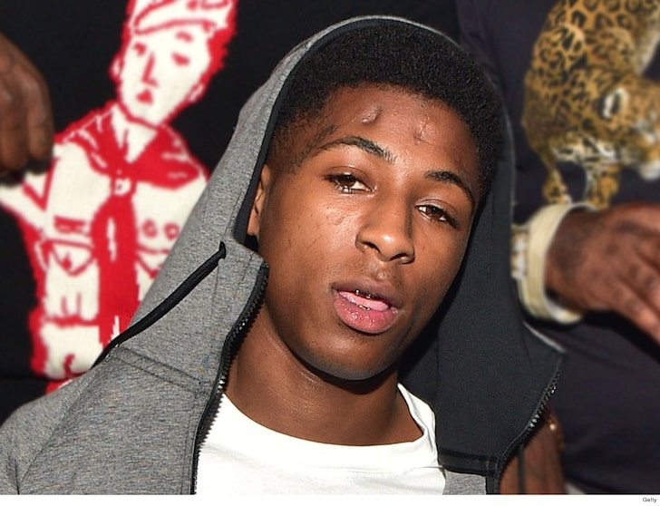

Kentrell DeSean Gaulden was born October 20,1999 and is currently 19. Mr. Gaulden goes by the rap name of Youngboy Never Broke Again. Mr. Gaulden has 4 children and just recently was released from prison. If one seen a picture of him they would probably wounder about the 3 marks on his head. It actually came from him playing as a child and a frined slammed him causing him to break his neck. The rapper had to recieve a halo. Moving on his crimial brackgroung is catching up with him but it is not stopping his rap career.
The rapper has accomplished many of his goals in the industry and earned the unexpected. The rapper has a song known as "Outside Today" which was placed at 31 on the Billboard Hot 100 chart along with 9 other songs on Hot 100. The rapper also has an album known as Until Death Call My Name which went platnium as well as 7 singles. Last but not least the artist has an album known as AI Youngboy which went gold aswell as 7 singles.
 Nba Youngboy Bio Nba Youngboy involved in shootout